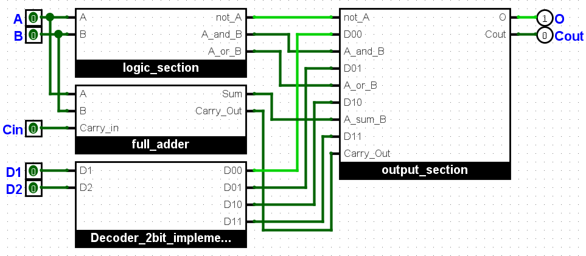

Decoder
The decoder is a circuit that taken in input n controls selects one of the 2^n lines on the output
Logic Section
The logic section receives two boolean variables as input and combines them through the three basic logical operations
Full Adder
The full adder receives three boolean variables as input: two digits plus an incoming carry; it returns their sum
and the outgoing carry

Output Section
The output section lets only the selected result pass through and compacts everything with a cascade of or ports

1 Bit ALU
A one-bit ALU puts together all the elements seen before, it takes 5 boolean variables in input: two digits, an incoming
carry and two decoder controls; it returns the result of the selected logical operation and the outgoing carry

2 Bit ALU
A 2-bit ALU simply puts two one-bit ALUs together by passing the output carry of the less significant one to the
incoming one of the most significant one

Stack Error Section
The stack error section checks whether the last and penultimate carry are the same, in which case the operation in
two's complement returned the correct result, otherwise you cannot perform the operation on that number of bits

Most Significant Bit ALU
To perform an operation on the most significant digit of the two numbers we can use an ALU with an integrated
stack error section in order to return that too without using an external one

8 Bit ALU
An 8-bit ALU is simply formed by 4 2-bit ALUs, which are built on 4 breadboards (one of them, the most significant,
also contains a stack error section), it takes in input: the incoming carry, two 8-bit numbers and two controls of the decoder; and it returns in
output: an 8-bit number, the outgoing carry and the stack error